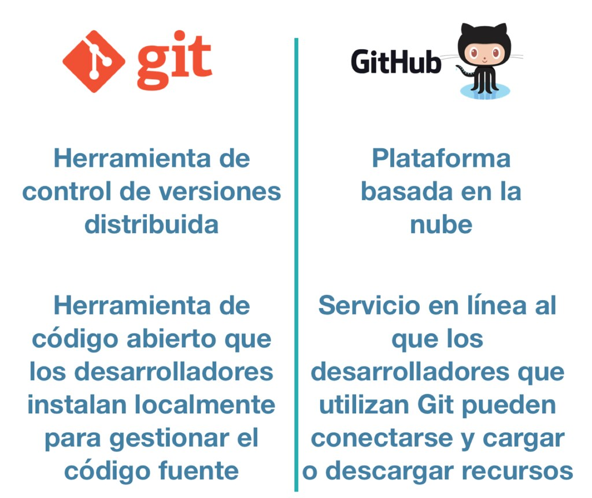

GitHub es una forja para alojar proyectos utilizando el sistema de control de versiones Git. Se utiliza principalmente para la creación de código fuente de programas de ordenador.
Git se ha convertido en el estándar mundial para el control de versiones. ¿Y qué es exactamente?
es un sistema de control de versiones distribuido, lo que significa que un clon local del proyecto es un repositorio de control de versiones completo. Estos repositorios locales plenamente funcionales permiten trabajar sin conexión o de forma remota con facilidad. Los desarrolladores confirman su trabajo localmente y, a continuación, sincronizan la copia del repositorio con la del servidor. Este paradigma es distinto del control de versiones centralizado, donde los clientes deben sincronizar el código con un servidor antes de crear nuevas versiones.
